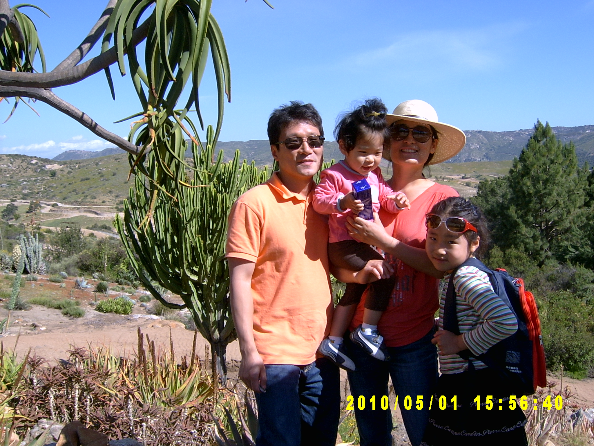

우리집은 살맞은 서뚱이, 기둥 클놈, 마스코트 왕만두, 그리고 나가 있습니다. 서뚱인 화를 잘 내고 방랑벽이 있고, 클놈은 잘 부딪치고 넘어지고, 왕만두는 깜빡깜빡하고 늦습니다. 나는 서뚱이, 클놈, 왕만두를 합쳐 놓은 것과 같습니다.

우리가족은 2016년까지 한국에서 잘 살고 있었는데 방랑벽이 있는 서뚱이 때문에 2017년부터 베트남 호치민에서 살고 있습니다. 서뚱인 미세먼지 때문에 한국에 가기 싫어하고, 클놈은 한국의 치열한 대학입시가 무서워서 한국에 가기 싫어하고, 왕만두는 영어공부하기 싫어서 한국에 가려고 합니다. 나는 베트남이 더워서 한국에 가고 싶습니다.